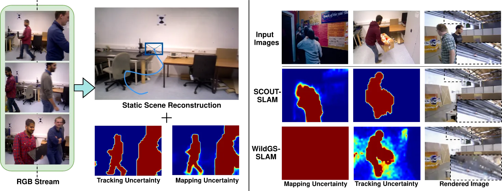
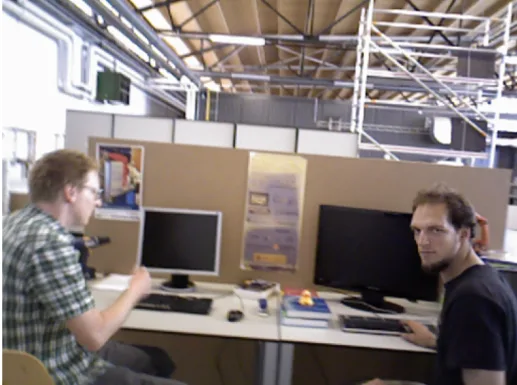
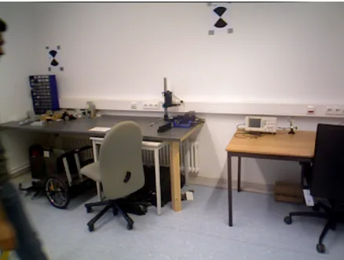
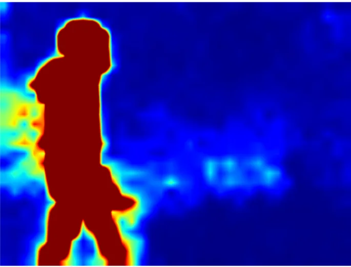
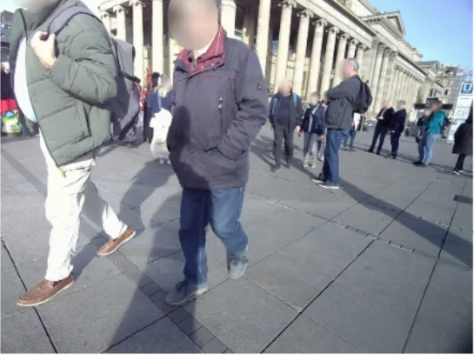

SCOUT-SLAM：野外环境中的结构耦合双不确定性 3DGS SLAM
SCOUT-SLAM: Structurally-Coupled Dual Uncertainty-Aware 3DGS SLAM in the Wild
SCOUT-SLAM 将动态场景中的追踪可靠性与 3DGS 重建可靠性从循环依赖中拆开，再通过共享表征耦合。它连接鲁棒状态估计、不确定性建模和神经渲染。
作者、单位与技术谱系 · Research context
作者与单位
研究脉络
- 3DGS-SLAM 动态场景方法方法上游关系：论文承接动态 mask、uncertainty-aware 3DGS-SLAM，并指出其依赖重建质量。[论文官方 HTML]
- SCOUT-SLAM本篇推进关系：以共享 MUNet、TUA 和空间自适应先验建立结构耦合双不确定性。[论文官方 HTML]
合作网络
- SCOUT-SLAM—Indian Institute of ScienceSCOUT-SLAM → Indian Institute of Science关系：共同署名/作者单位[论文官方 HTML]
- SCOUT-SLAM—动态数据集SCOUT-SLAM → TUM RGB-D、Bonn Dynamic、Wild-SLAM MoCap关系：公开实验依赖[论文官方 HTML]
作者和单位是原文事实；技术脉络是基于论文引用与公开项目页的来源化解读；未据此推断导师或师生关系。
方法本质拆解 · What actually changed
是不是微调？
TUA 是对共享 MUNet 的 low-rank adaptation，并以 multi-view feature consistency 训练；空间自适应先验还会调制 MUNet 的训练目标。
有没有额外约束？
逐像素空间自适应先验作用于 Negative Log-Likelihood，抑制重建不稳定对静态区域 uncertainty 的污染；追踪 uncertainty 还被用于 pose residual 重加权。
推理/后端到底做了什么？
系统在在线 tracking、3DGS mapping 和 uncertainty weighting 间循环更新，但没有证据表明它依赖传统全局回环 BA；具体迭代预算待核验。
方法本质是什么？
TUA 是对共享 MUNet 的 low-rank adaptation，并以 multi-view feature consistency 训练；空间自适应先验还会调制 MUNet 的训练目标。 该设计把可观测证据转成几何约束或时序合并动作，再作用于位姿、结构或表征输出。
共享视觉表征 + 双不确定性估计 + 残差/似然重加权 → 减少动态场景中的追踪—重建反馈污染。

桥接价值Bridge
桥接价值
SCOUT-SLAM 将动态场景中的追踪可靠性与 3DGS 重建可靠性从循环依赖中拆开，再通过共享表征耦合。它连接鲁棒状态估计、不确定性建模和神经渲染。
方法与模块Method
方法摘要
共享 MUNet 产生 mapping uncertainty；低秩 Tracking Uncertainty Adapter 由多视图特征一致性训练，得到不完全依赖重建质量的追踪不确定性。空间自适应先验调节逐像素 log-likelihood，避免静态区域因重建不稳而被错误降权。
可迁移模块
可迁移的是“追踪不确定性—地图不确定性”双分支接口，以及对动态对象不依赖封闭语义类别的空间门控。低秩适配器还可作为轻量域适配模块，但需要重新校准不确定性。

证据Evidence
关键证据与数字
原文在 3 个动态 benchmark 上评估：TUM RGB-D、Bonn Dynamic、Wild-SLAM MoCap，并报告 SOTA tracking 与 artifact-free static reconstruction。具体 ATE、渲染质量和消融数字待核验，不能从摘要外推百分比。
边界与下一步Limits & Next Step
边界与风险
动态物体、快速相机运动、非刚体运动和 MUNet 训练分布外场景是主要风险。低秩适配可能把特征一致性偏差带入追踪置信度，空间先验也可能在极端遮挡下误保留静态区域。
下一步实验
在 TUM/Bonn/Wild-SLAM 上固定同一渲染器，分别关闭 TUA、空间自适应先验和共享 MUNet，报告 ATE、静态区域 PSNR/SSIM、动态误检率和运行时间。再加入未见动态类别与快速运动序列，做 uncertainty calibration 和 failure recovery。
{kind=link}

{kind=link}

{kind=link}

{kind=link}
